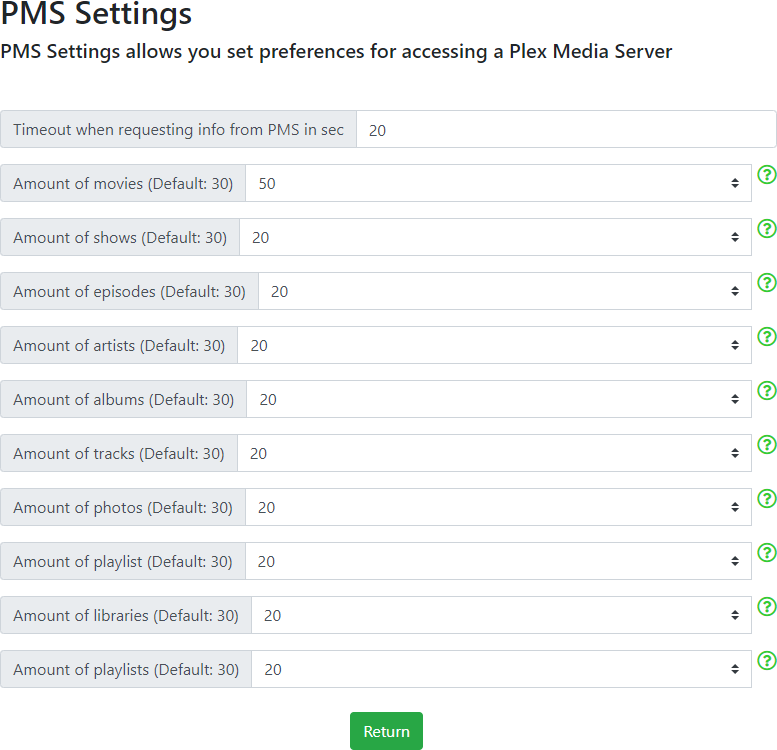

The PMS (Plex Media Server) Settings page allows you to set some important limits. This will allow you to tailor the WebTools-NG settings to suit your network conditions when accessing your Plex Media Server/s for data.

Timeout when requesting info from PMS in sec
This option will increase or decrease the timeout when communicating with your server. You may need to set this to a higher value if you have a slow server device, such as a NAS, otherwise the default value should suffice.
Amount of movies (Default: 30)
This defines the number of Movies to grab each time WebTools-NG makes a call to the server for the list of files to process.
Amount of shows (Default: 30)
This defines the number of TV Shows to grab each time WebTools-NG makes a call to the server for the list of files to process.
Amount of episodes (Default: 30)
This defines the number of Episodes to grab each time WebTools-NG makes a call to the server for the list of files to process.
Amount of artists (Default: 30)
This defines the number of Artists to grab each time WebTools-NG makes a call to the server for the list of files to process.
Amount of albums (Default: 30)
This defines the number of Albums to grab each time WebTools-NG makes a call to the server for the list of files to process.
Amount of tracks (Default: 30)
This defines the number of Tracks to grab each time WebTools-NG makes a call to the server for the list of files to process.
Amount of photos (Default: 30)
This defines the number of Photos to grab each time WebTools-NG makes a call to the server for the list of files to process.
Amount of playlists (Default: 30)
This defines the number of Playlists to grab each time WebTools-NG makes a call to the server for the list of files to process.
Amount of libraries (Default: 30)
This defines the number of Libraries to grab each time WebTools-NG makes a call to the server for the list of files to process.
Amount of playlists (Default: 30)
This defines the number of Playlists to grab each time WebTools-NG makes a call to the server for the list of files to process.
Return
Click on the Return button to return to the Global Settings page
Note: Using a setting that is too high for the Amount of X files to grab, may result in WebTools-NG being unable to complete it's tasks and therefore failing. Please return the setting to it's default value before trying again, thanks.
WebTools-NG is an independent project and is NOT associated with Plex Inc.
Use of this program is at your own risk, no responsibility is taken by WebTools-NG.
Please consider supporting this project

- All Rights Reserved - WebTools-NG